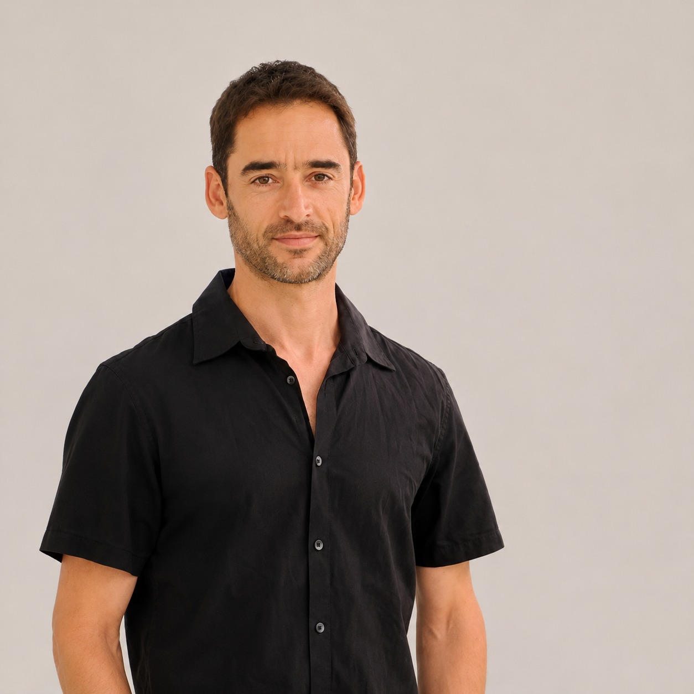

המומחים לטיפול בדליפות CSF באיכילוב
פרופיל מלא, תחומי התמחות ופרטי יצירת קשר וזימון תורים:

ד"ר אודי שדה
נוירורדיולוג בכיר ומנהל השירות לצנתורי שבץ מוחי, אגף הדימות באיכילובעבר הכשרה והתמחות ייעודית באבחון וטיפול בתת-לחץ תוך-גולגולתי (SIH) במרכז היוקרתי Mayo Clinic בארה"ב. מוביל בישראל ביצוע בדיקות מיאלוגרפיה דינמית (DSM), CT מילוגרפיה, ושיטת הטיפול החדשנית באמצעות צנתור ורידי (אמבוליזציה) לסגירת פיסטולות נוזל שדרה-וריד (CSF-Venous Fistula).
פרטי יצירת קשר וזימון תורים:
- מוקד זימון תורים איכילוב: 03-6974000 (*8801)
- היחידה לנוירורדיולוגיה פולשנית: 03-6973504
- פנייה מקוונת: אתר המרכז הרפואי ת"א (איכילוב)
- מיקום: אגף הדימות, רח' ויצמן 6, תל אביב